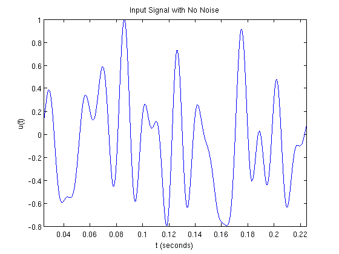
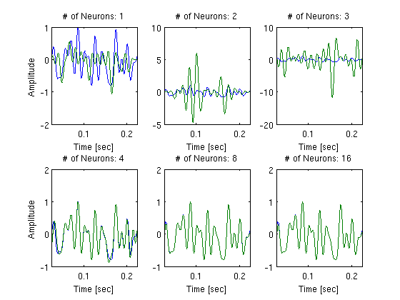
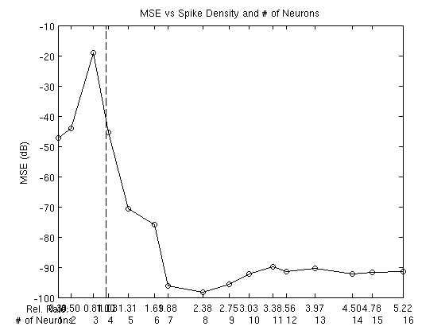
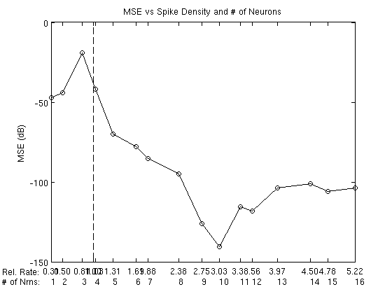
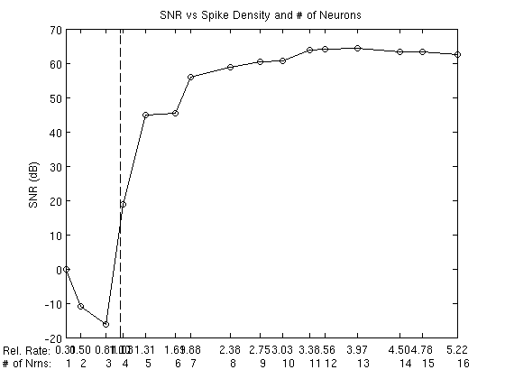

Time Encoding and Decoding Using Filters with Arbitrary Delays
This demo illustrates the time encoding and decoding of a bandlimited signal using a population of ideal integrate-and-fire neurons with receptive fields that delay the signal by arbitrary known lengths of time.
Contents
Generating a Test Signal
Generate a noiseless signal 0.25 s long sampled at 1 GHz containing maximum number of frequency components below 80Hz:
dur = 0.25; fs = 1e6; dt = 1/fs; f = 80; bw = 2*pi*f; t = linspace(0,dur,floor(dur/dt)); rand('twister',0); randn('state',0); np = -inf; % noiseless signal nc = floor(dur*f); u = gen_test_signal(dur,dt,f,np,nc); tr_vc = round(0.1*length(t))+1:round(0.9*length(t)); % time interval of interest u = u/max(abs(u(tr_vc))); if np == -inf, fig_title = 'Input Signal with No Noise'; else fig_title = sprintf('Input Signal with %d dB of Noise',np); end fprintf(1,'%s\n',fig_title); plot_signal(t(tr_vc),u(tr_vc),fig_title);
Input Signal with No Noise
Creating Delayed Input Signals
Set neuron parameters:
N = 16; % maximum number of neurons b = 0.6+rand(1,N); % arbitrary values for biases d = 1.4+rand(1,N)/3; % arbitrary values for thresholds kd = 0.01*ones(1,N); % integration constants delay = exprnd(1/3/(2*f),[1,N]); % exponentially distributed delay values % shifted signal should be defined on the interval of interest for i = 1:N if delay(i) > tr_vc(1); delay(i) = exprnd(1/3/(2*f),1); end end
Create delayed versions of the signal:
u_s = zeros(N,length(tr_vc)); for i=1:N u_s(i,:)=u(tr_vc-round(delay(i)/dt)); end
Plot the original and delayed signals:
figure; plot(t(tr_vc),u(tr_vc),t(tr_vc),u_s(1,:), ... t(tr_vc),u_s(2,:),t(tr_vc),u_s(3,:)); xlabel('t (seconds)'); ylabel('u(t)'); title('Original and Delayed Signal');

Time Encoding
Encode the signals:
for i=1:N s = iaf_encode(u_s(i,:), dt, b(i), d(i)*kd(i)); TK(1:length(s),i) = cumsum(s)' + t(tr_vc(1)); % spike times of neuron i LN(i) = length(s); % number of spikes of neuron i end
Plot the spike times:
figure;
TK_list = {};
for i=1:N,
TK_list{end+1} = TK(1:LN(i),i)';
end
plot_raster(TK_list);
title('Spike Times');
ylabel('neuron #');
 Time Decoding
ln = LN-1; % # of interspike intervals, i.e., samples
ln2 = cumsum([0,ln]);
Construct the G matrix:
G = zeros(sum(ln),sum(ln)); for i=1:N for j=1:N G(ln2(i)+1:ln2(i+1),ln2(j)+1:ln2(j+1)) = ... G_block_delay(TK(1:LN(i),i)',TK(1:LN(j),j), ... delay(i),delay(j),bw,dt); end end
Perform recursive recovery using 1, 2, ..., N neurons:
u_rec = zeros(N,length(tr_vc)); % uncomment plotting commands to show all 16 plots % figure; for i=1:N % recover using the first i neurons: u_rec(i,:) = iaf_decode_pop_delay(TK,LN,t(tr_vc),bw,b,d,kd, ... G(1:ln2(i+1),1:ln2(i+1)),i,delay,dt); % subplot(4,N/4,i);plot(t(tr_vc),u(tr_vc),t(tr_vc),u_rec(i,:)); % xlabel('Time [sec]'); ylabel('Amplitude'); % title(sprintf('# of Neurons: %d',i)) % drawnow; end
Plot recovery using 1, 2, 3, 4, 8, and 16 neurons:
figure; subplot(2,3,1);plot(t(tr_vc),u(tr_vc),t(tr_vc),u_rec(1,:)); xlim([min(t(tr_vc)) max(t(tr_vc))]); xlabel('t (sec)'); title('# of Neurons: 1'); ylabel('u(t)'); subplot(2,3,2);plot(t(tr_vc),u(tr_vc),t(tr_vc),u_rec(2,:)); xlim([min(t(tr_vc)) max(t(tr_vc))]); xlabel('t (sec)'); title('# of Neurons: 2'); subplot(2,3,3);plot(t(tr_vc),u(tr_vc),t(tr_vc),u_rec(3,:)); xlim([min(t(tr_vc)) max(t(tr_vc))]); xlabel('t (sec)'); title('# of Neurons: 3'); subplot(2,3,4);plot(t(tr_vc),u(tr_vc),t(tr_vc),u_rec(4,:)); xlim([min(t(tr_vc)) max(t(tr_vc))]); xlabel('t (sec)'); title('# of Neurons: 4'); ylabel('u(t)'); subplot(2,3,5);plot(t(tr_vc),u(tr_vc),t(tr_vc),u_rec(8,:)); xlim([min(t(tr_vc)) max(t(tr_vc))]); xlabel('t (sec)'); title('# of Neurons: 8'); subplot(2,3,6);plot(t(tr_vc),u(tr_vc),t(tr_vc),u_rec(16,:)); xlim([min(t(tr_vc)) max(t(tr_vc))]); xlabel('t (sec)'); title('# of Neurons: 16');
Plot the MSE in terms of spike density:
tr_vc2 = round(0.15*length(t))+1:round(0.85*length(t)); % time interval of interest for i=1:N mse(i)=10*log10(mean(u_rec(i,tr_vc2-tr_vc(1)+1)-u(tr_vc2)).^2); end sp_den = (ln2(2:end)/(length(tr_vc)*dt))/(bw/pi); figure; plot(sp_den,mse,'k-o'); hold on; xlim([min(sp_den) max(sp_den)]); ylabel('MSE (dB)'); title('MSE vs Spike Density and # of Neurons'); set(gca,'XTick',sort([1-eps sp_den])); set(gca,'XTickLabel',arrayfun(@(x) sprintf('%.2f',x), ... sort([1-eps sp_den]),'UniformOutput', false)); xlimits = get(gca,'XLim'); ylimits = get(gca,'YLim'); plot(ones(1,100),ylimits(1):(ylimits(2)-ylimits(1))/99:ylimits(2),'k--') for i=1:N text(sp_den(i),ylimits(1)-(ylimits(2)-ylimits(1))*0.08,sprintf('%d',i)); end text(xlimits(1)-(xlimits(2)-xlimits(1))*0.16, ... ylimits(1)-(ylimits(2)-ylimits(1))*0.04,'Rel. Rate:') text(xlimits(1)-(xlimits(2)-xlimits(1))*0.16, ... ylimits(1)-(ylimits(2)-ylimits(1))*0.08,'# of Nrns:')
Plot the SNR in terms of spike density:
for i=1:N snr(i)=-10*log10(sum((u_rec(i,tr_vc2-tr_vc(1)+1)-u(tr_vc2)).^2)/sum(u(tr_vc).^2)); end sp_den=(cumsum(LN-1)/(length(tr_vc)*dt))/(bw/pi); figure; plot(sp_den,snr,'k-o'); hold on; xlim([min(sp_den) max(sp_den)]); ylabel('SNR (dB)'); title('SNR vs Spike Density and # of Neurons'); set(gca,'XTick',sort([1-eps sp_den])); set(gca,'XTickLabel',arrayfun(@(x) sprintf('%.2f',x), ... sort([1-eps sp_den]),'UniformOutput', false)); xlimits = get(gca,'XLim'); ylimits = get(gca,'YLim'); plot(ones(1,100),ylimits(1):(ylimits(2)-ylimits(1))/99:ylimits(2),'k--') for i=1:N text(sp_den(i),ylimits(1)-(ylimits(2)-ylimits(1))*0.08,sprintf('%d',i)); end text(xlimits(1)-(xlimits(2)-xlimits(1))*0.16, ... ylimits(1)-(ylimits(2)-ylimits(1))*0.04,'Rel. Rate:') text(xlimits(1)-(xlimits(2)-xlimits(1))*0.16, ... ylimits(1)-(ylimits(2)-ylimits(1))*0.08,'# of Nrns:')
Author: Eftychios A. Pnevmatikakis
Copyright 2009-2012 Lev Givon